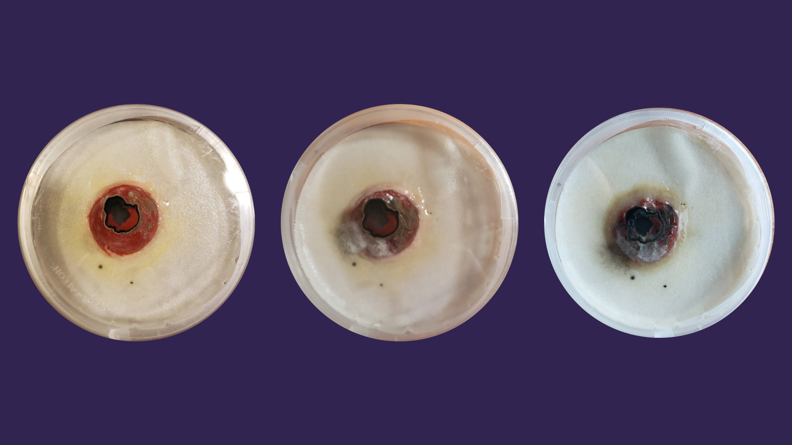
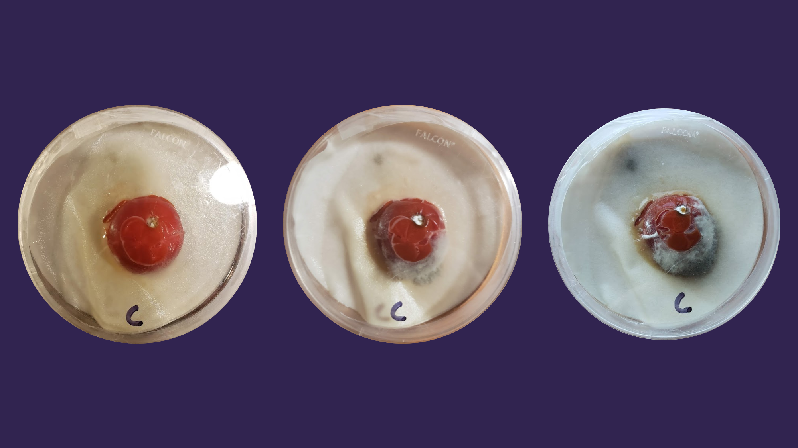

Experiment 3
Description
This experiment tests how the microbe interacts with organic matter, specifically how it affects a cherry tomato. I used two cherry tomatoes. One I cut the surface and put a small piece of my microbe on it, the other tomato was used as a control, and I simply just cut the surface. Both of these were then isolated in petri dishes.
Hypothesis
The tomato will show symptoms associated with fungal plant diseases such as rots and mold.
Results
Diseased Tomato:
Control Tomato:
Conclusion
My hypothesis for this experiment was somewhat correct. The tomato exposed to the microbe did show the symptoms expected. However, the control tomato also showed the same symptoms, so we cannot know if the microbe was the cause. I was also surprised when I noticed that the microbe itself began to grow and spread on the surface of the tomato. If I was to redo this experiment, I would want to test tomatoes on a living tomato plant to see how the microbe affects the entire plant. Unfortunately there isn't much to take away from this experiment besides the fact that organic matter such as tomatoes contain the necessary nutrients for the microbe to grow.